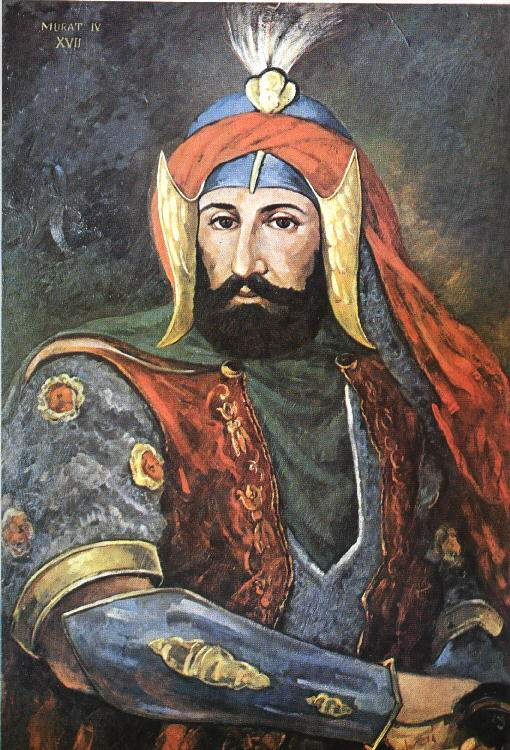

|
 |
III.MURAD HAN 22 Aralık 1574 (Ramazan ayı) Çarşamba sabahı, Osmanlı mülkünü devralır almaz ilk iş olarak 5 kardeşini boğdurmuştur.[2] Osmanlı Devleti, Lehistan yönetimine hakim olmakla Avusturya'ya komşu olan iki müttefik elde etmiş olacaktı. Fransızlarla Kanuni döneminde iyi ilişkiler kurulmuştu. Fakat Fransız tahtının boşalması ile Lehistan'da iktidar boşluğu oluştu. III. Murat'ın isteği ile Erdel Beyi Bathary, Lehistan kralı oldu. Lehistan ile yapılan anlaşmalar sonucu kuzey sınırı güvenli hale getirildi. III. Murat tahta geçtiğinde Kuzey Afrika kıyılarından sadece Fas Osmanlı topraklarına katılmamıştı. 1578 yılında Ramazan Paşa komutasındaki Osmanlı kuvvetleri Fas'ı ele geçirerek bölgedeki Portekiz gücünü kırdılar. 1584 yılında bir Yeniçeri isyanında öldürülen Trablusgarp Valisi Ramazan Paşa'nın ailesini İstanbul'a getiren gemiye Kefalonya açıklarında Venedik gemileriyle saldırı düzenlenmesi sonucunda Venedik ile uzun süredir devam eden barış sona erdi. Venedik senatosuna bir ültimatom gönderen III. Murat, Ramazan Paşa'nın ailesini ve mallarını Preveze'ye getirtmeyi başardı. Venedik'in de barışı korumak istemesi üzerine iki devlet arasındaki mesele çözüldü. |